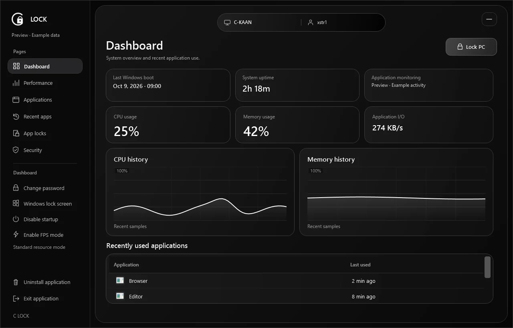

Skills
HOW I WORK- OSINT
- Problem solving
- Teamwork
- Research
- Leadership
- Adaptability
- Independent work
PROFILE & SKILLS
WHO AM I
I’m a student at Bahçeşehir Science and Technology High School, mainly focused on software development, reverse engineering, and security.
I enjoy finding weaknesses in computer systems and turning those findings into practical tools. Anti-cheat research and emulation are particular interests of mine.
SELECTED PROJECTS

PC locking, application access, and a customizable Windows dashboard.
Open projectBuilds and hardens BitWall’s detection rules and backend engine, and helps keep the live threat dashboard accurate.
GET IN TOUCH
Questions, ideas, or a project in mind? Send me an email.
kaanyaxiz@icloud.com